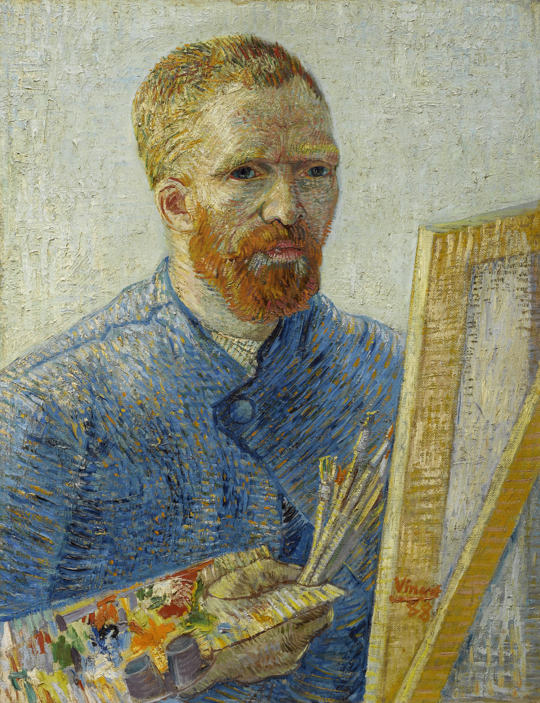

The peculiarities of training GANs
Mårten Nilsson
Objectives
- Learn how GANs work
- Avoid traps
- Let GANs amaze us
This guy
↓

Let's write this in code
Let's write this in code
D = nn.Sequential(
nn.Conv2d(1, 4, 4, stride=2),
nn.LeakyReLU(0.2),
nn.Conv2d(4, 8, 4, stride=2),
nn.LeakyReLU(0.2),
Flatten(),
nn.Linear(200, 10),
nn.LeakyReLU(0.2),
nn.Linear(10, 1),
nn.Sigmoid(),
)
Let's write this in code
D = nn.Sequential(...)
G = nn.Sequential(
nn.Linear(10, 200),
nn.LeakyReLU(0.2),
Unflatten(),
nn.ConvTranspose2d(8, 4, 5, stride=2),
nn.LeakyReLU(0.2),
nn.ConvTranspose2d(4, 1, 4, stride=2),
nn.Sigmoid(),
)
Let's write this in code
D = nn.Sequential(...)
G = nn.Sequential(...)
opt_D = torch.optim.Adam(D.parameters())
opt_G = torch.optim.Adam(G.parameters())
Let's write this in code
D = nn.Sequential(...)
G = nn.Sequential(...)
opt_D = torch.optim.Adam(D.parameters())
opt_G = torch.optim.Adam(G.parameters())
latent_point = torch.FloatTensor(settings.batch_size, 10)
vis = Visualizer()
loader = get_dataloader()
Let's write this in code
D = nn.Sequential(...)
G = nn.Sequential(...)
opt_D = torch.optim.Adam(D.parameters())
opt_G = torch.optim.Adam(G.parameters())
latent_point = torch.FloatTensor(settings.batch_size, 10)
vis = Visualizer()
loader = get_dataloader()
for epoch in range(settings.epochs):
loss_G = 0
loss_D = 0
for i, (img, label) in enumerate(loader):
latent_point.normal_()
fake = G(latent_point)
pred_fake = D(fake)
D = nn.Sequential(...)
G = nn.Sequential(...)
opt_D = torch.optim.Adam(D.parameters())
opt_G = torch.optim.Adam(G.parameters())
latent_point = torch.FloatTensor(settings.batch_size, 10)
vis = Visualizer()
loader = get_dataloader()
for epoch in range(settings.epochs):
# ...
for i, (img, label) in enumerate(loader):
latent_point.normal_()
fake = G(latent_point)
pred_fake = D(fake)
if i%2==1:
loss_G = torch.mean(-torch.log(pred_fake))
opt_G.zero_grad()
loss_G.backward()
opt_G.step()
D = nn.Sequential(...)
G = nn.Sequential(...)
opt_D = torch.optim.Adam(D.parameters())
opt_G = torch.optim.Adam(G.parameters())
latent_point = torch.FloatTensor(settings.batch_size, 10)
vis = Visualizer()
loader = get_dataloader()
for epoch in range(settings.epochs):
# ...
for i, (img, label) in enumerate(loader):
latent_point.normal_()
fake = G(latent_point)
pred_fake = D(fake)
if i%2==1:
loss_G = torch.mean(-torch.log(pred_fake))
# Update G
else:
pred_real = D(img)
loss_D = torch.mean(-torch.log(1 - pred_fake) - torch.log(pred_real))
# Update D
What could possibly go wrong?
- Non-convergence
- Unstable training
- Mode collapse
- Vanishing gradients
- Sparse gradients
- Exploding gradients
- Imbalanced networks
- Momentum-based optimizer
What about Batch Normalization?
How do we solve these issues?
- Lots of methods proposed
- Still an open problem
- Find the tricks that work for you
My question
"Can deep generative models be applied to generate synthetic data sets that can be used to boost the performance of existing discriminative models? "
In other words: Can we generate useful data?


What worked for me
- Architecture tweaking
- Adamax with Β=(0.5, 0.99)
- Combine with autoencoder
Real

WGAN

VAE

AEGAN

Real

WGAN

VAE

AEGAN